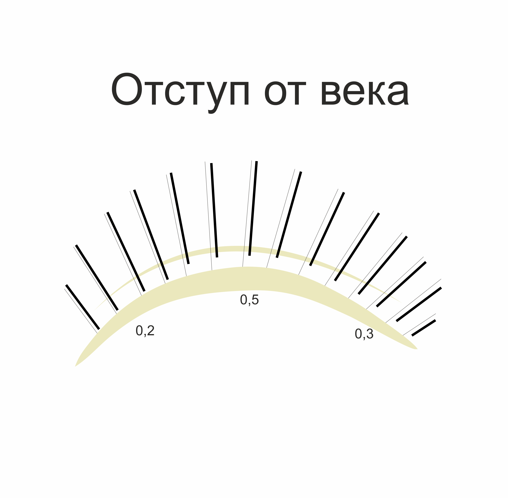

Наращивание ресниц – не такой простой процесс, как это может показаться с первого взгляда. Процедура требует проработки каждой «родной» реснички, несмотря на ее «возраст» и положение относительно веку. Это тяжелый кропотливый труд, требующий максимум концентрации, усидчивости и терпения. Всем, кто желает постичь мастерство данного направления индустрии красоты лучше пойти на обучение к профессионалу, предварительно изучив отзывы и выбрав подходящий вариант. Однако общую информацию лучше знать заранее как будущему мастеру, так и клиенту, чтобы отличать качественное наращивание от не качественного.
Виды современного наращивания ресниц
Всего существует 2 основные разновидности наращивания – классическое и объемное. Классика подразумевает прикрепление 1 искусственной ресницы к своей. Объемное наращивание состоит из рукотворных пучков из нескольких ресничек.
- 2D
- 3D
- 4D
- 5D
- 6D
- 7D
Внимание! Наращивания из норки, белки, барсука, бобра и прочих животных не существует! Профессиональный мастер знает, что ресницы различны исключительно толщиной по диаметру и изготавливаются из искусственного волокна.
Кроме толщины и длины, большую роль играет изгиб ресничек. С его помощью можно удлинить глаз визуально или распахнуть взгляд, скорректировать асимметрию, сконструировать новый образ. В этом не играет роли объем искусственных ресничек, достаточно уметь обращаться с изгибами и знать, какой из них за что отвечает.
- Изгиб С - плавный, такой изгиб имеет 70% европейцев. Идеально подойдет для подчеркивания красоты родных ресничек и для тех, кто не хочет, чтобы реснички бросались в глаза.
- Изгиб D - более загнутый изгиб, так же не сильно выделяется, но может визуально выделить прямые от природы реснички, если их предварительно не завить. В случае очень прямых ресничек, зона сцепки с искусственной составит мало площади, что приведет к краткосрочной носки
- Изгиб L и L+ - особенные изгибы, применяющиеся для коррекции очень узкого разреза глаза и по желанию клиента, чтобы попробовать что-то необычное. Плохо смотрятся с завитыми от природы ресничками и на больших глазах.
Остальные изгибы менее популярны и могут сильно отличаться друг от друга в зависимости от марки производителя. К таковым относятся:
- CC
- D+
- B
- J
- A
Особенности формирования пучков
<> Идеальность наращивания при объемном виде процедуры зависит от мастерства лэшмейкера. Чтобы наращивание выглядело эффектно и красиво, пучок должен соответствовать определенным нормам. Если делается 2Д, между крайними ресничками расстояние не должно превышать 2 мм. Если это 3Д – то 3 мм и т.д. Тренироваться формировать пучок лучше на ватном диске, но заранее изготовленные пучки не подлежат креплению на глаза клиента. Слишком большое количество клея пагубно повлияет на наращивание.Существует 2 вида формирования пучков: ручной и с ленты. В зависимости от вида и выбирается пинцет для ресниц. Кому то удобен вид «сапожка», кому то – просто изогнутый. Второй пинцет в работе – прямой для разделения ресничного ряда.

После того как пучок сформирован, необходимо его сразу ставить на место реснички. При этом место сцепки должно быть максимальное. Если ресничка изогнута в другую сторону, лучше применить метод «замочка» - зацепить ресничку с изнанки, выводя пучок наружу. Таким образом, сцепка будет надежнее. Все наращенные ресницы ставятся под 90 градусов к веку независимо от направления роста своих.
Эффекты наращивания
Эффекты создаются не только изгибами, но и длинами ресниц. Для плавности перехода длин используется закон
рядности
– на
каждом ряду необходимо ставить ресницы разной длины.
В некоторых марках выпускаются реснички полуторных длин,
это так же благоприятно влияет на плавность перехода длин.
Наиболее популярные эффекты
Лисий

На внешнем углу глаза используются ресницы максимально возможной длины. 2-3 штуки от внешнего угла необходимо занимать ресницами меньшего размера, во избежание выпадения, т.к. эти ресницы наиболее уязвимы.
Беличий
Этот вариант больше подойдет для раскрытия взгляда. Максимальная длина приходится на середину глаза, где расположен зрачок.
Натуральный
Максимальная длина ресниц распределена таким образом, чтобы переход был плавным, внешний и внутренний угол занимаются самыми маленькими ресничками – 6-7 мм.
Кукольный
В этой разновидности максимальная площадь заполнена одним размером ресничек. На края все-таки клеятся маленькие реснички.
Эффект «Ким»

Становится популярным небрежный эффект наращенных ресничек от поп-дивы Ким Кардашьян. Это выглядит как «лучики» из нераскрывшихся пучков по всему глазу. На нижний ресничный ряд при этом крепятся маленькие реснички для создания эффекта подводки.
Немаловажную роль играет отступ искусственной реснички от века. Если ресница крепится слишком близко, это влияет на комфорт носки, может возникнуть зуд, покраснение и деформация луковицы реснички. То же самое касается наличия склеек натуральных ресниц. Распространенное мнение – отступ должен быть равным по всей длине. Однако это не так. На всех участках ресничного ряда этапы роста могут отличаться, поэтому крепя ресницы одинаково везде, с внешних углов они выпадут быстрее, чем с середины.
Наращивание ресниц до и после
Несмотря на постоянное развитие современной косметологии, ни одна тушь не способна создать абсолютно идентичного эффекта наращенных ресниц. Наращивание создает аккуратный эффект дополнительного объема и цвета натуральным ресничкам. Свой ряд натуральных ресниц может быть абсолютно неоднородным, с разной длиной и толщиной. Поэтому, даже нанося толстый слой туши, добиться однородности невозможно.

Кроме всего, можно даже не описывать преимущества наращивания, но основное – отсутствие необходимости краситься по утрам. С этой процедурой легко выглядеть на «5+» круглые сутки. Глаза после наращивания ресниц выразительнее и ярче. Если процедура качественная – соблюдены все нормы и применяется хороший клей – эффект будет радовать длительное время. Читайте также о лучших клеях для наращивания ресниц 2017 года.
Работа с цветными ресницами
Добавление ярких акцентирующих элементов в наращивание – выгодный ход лэшмейкеров. Такие варианты используются не только в фотосессиях, эпатажным натурам придутся по душе оригинальные реснички разного цвета. Особенно актуальным данное предложение становится перед новым годом и в летний сезон.
Существует 2 вида заполнения цветными материалами глаза. Полное, с растушевкой по всему периметру:

Частичное, только на уголке: